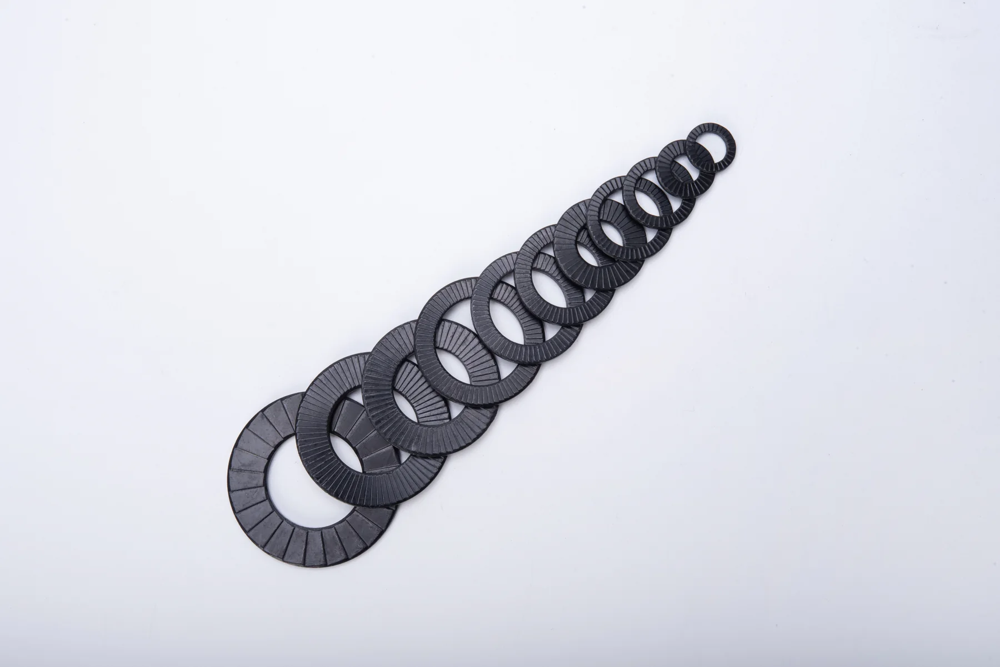

轨道交通
车辆设备、转向架及线路相关设备常面临持续振动、冲击和严格检修要求。应重点确认振动谱、安装空间、螺栓等级和报告适用性。
Industry Applications
行业名称只能作为起点。真正决定选型的是载荷、振动、孔型、基材、腐蚀、温度、安装工艺和失效后果。
当连接承受持续横向振动、冲击、频繁启停，且螺栓松动会造成停机、维护或安全风险时，可评估双叠自锁垫圈。是否适用仍需结合具体连接结构确认。
Key Industries
车辆设备、转向架及线路相关设备常面临持续振动、冲击和严格检修要求。应重点确认振动谱、安装空间、螺栓等级和报告适用性。
风力发电、水力发电、发电机组及管路支撑可能承受交变载荷、户外腐蚀和较长维护周期。
底盘、推力杆、传动与设备安装连接承受道路冲击、载荷变化和频繁运行，应兼顾锁紧、强度和维护便利性。
破碎、钻探、振动筛和液压设备工况冲击强、粉尘多、停机成本高，需重视配合面、预紧力和大规格连接。
除振动外还要处理盐雾、氯离子和异种金属接触问题，材料选择不能仅依据“是否不锈钢”。
泵、压缩机、发动机、输送设备、桥梁附属设施和高压管路等连接，应根据振动源与检修制度选型。
Input Checklist
信息越完整，越能避免仅按螺纹规格选错产品。以下内容可直接作为询价附件清单。
| 类别 | 建议提供的信息 | 为什么重要 |
|---|---|---|
| 连接结构 | 螺栓/螺母/螺柱、通孔或螺纹孔、沉孔、法兰 | 决定使用位置、数量和可用外径 |
| 规格参数 | 螺纹、等级、长度、孔径、接触面尺寸、拧紧参数 | 决定尺寸匹配和预紧力水平 |
| 动态工况 | 振动方向、频率、幅值、冲击、启停循环 | 决定风险等级和验证方法 |
| 环境 | 温度、湿度、盐雾、介质、户内/户外、寿命 | 决定材料与表面处理 |
| 安装面 | 材料、硬度、粗糙度、涂层、孔型 | 影响放射齿咬合与承压 |
| 交付要求 | 数量、批次、图纸、检测、包装和追溯 | 决定制造和质量文件方案 |

Large-size Capability
随着直径、预紧力和接触面积增加，材料、热处理变形、齿形一致性、加工设备、包装运输和安装工具都会变化。特殊大尺寸需单独评估工艺、最小订单与验证计划。
咨询特殊尺寸宇匠可根据连接结构和使用环境协助梳理选型条件，再确认产品规格。